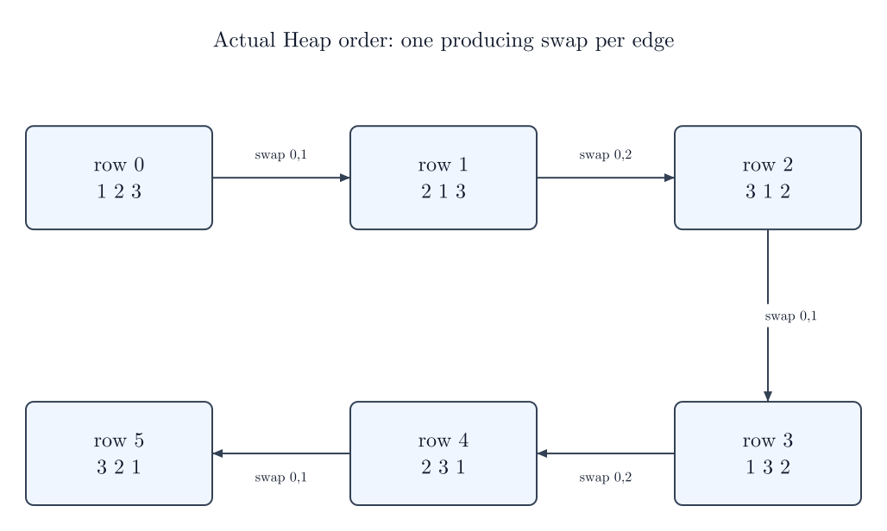
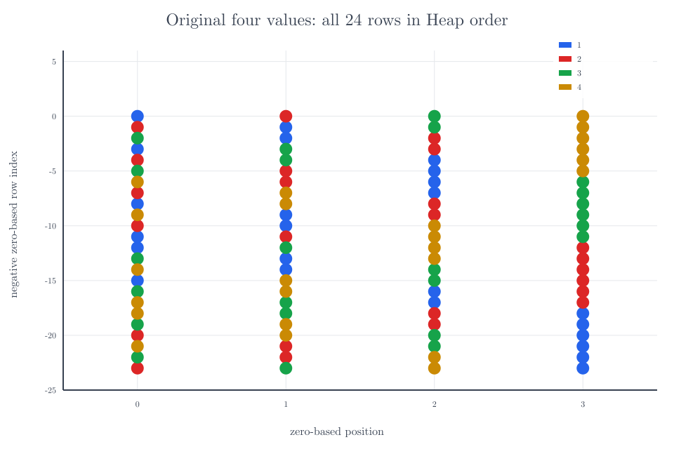
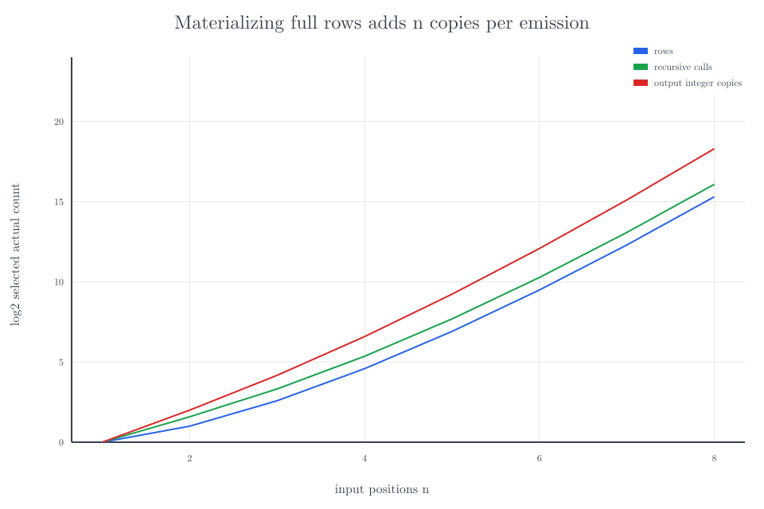
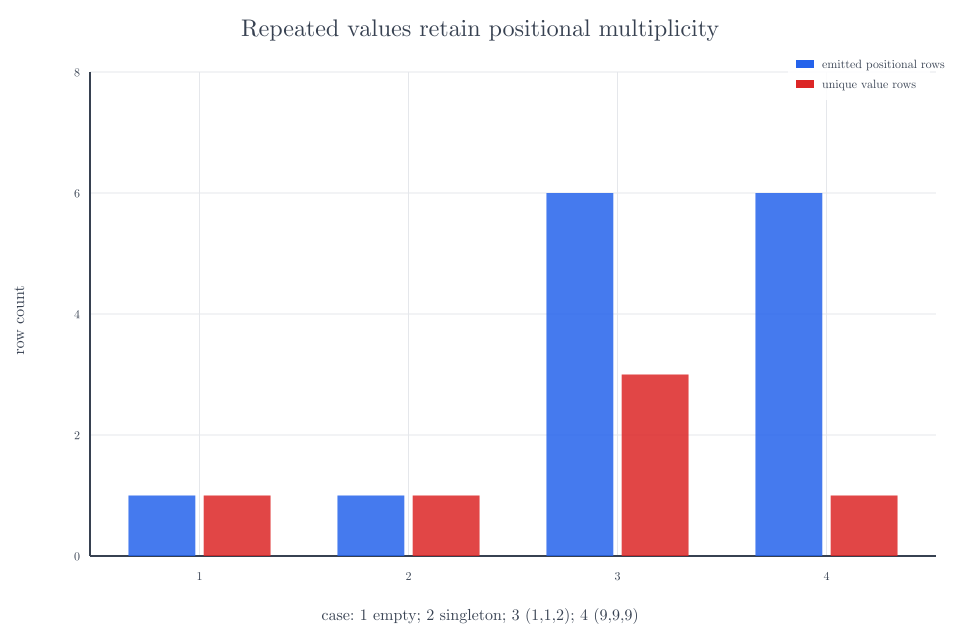

Heap permutations: one swap, many copied values
Abstract
Visit every ordering of a small collection while changing only two positions between visits. Heap's algorithm supplies a deterministic one-swap schedule, but materializing every full ordering still costs factorial storage and output copying. This report follows six tiny permutations through actual recursive swap events, retains the original four-value example, and checks work through eight positions. Repeated values distinguish positional permutations from unique value arrangements, and explicit complete limits prevent accidentally requesting an enormous result. Heap permutations are unrelated to the heap data structure used by heapsort.
Six tiny states, five actual swaps
Start with three distinct values 123. The core emits 123, swaps positions 0 and 1 to emit 213, then uses the odd-prefix rule to swap 0 and 2 before emitting 312. Two more length-two swaps and another odd-prefix swap complete the six rows. All indices in the API and table below are zero-based.
The trace records the producing prefix size, block counter, swap indices and values immediately before each actual swap. It does not infer a swap by comparing output rows or execute the generator again. Ordinary output already owns every row.
#include <dm/dm.hpp>
int main() {
std::filesystem::create_directories("build");
const auto t = dm::algorithms::heap_permutations_trace({1, 2, 3});
std::print("| next row index | prefix k | completed block i | left | right | left before | right before " "|\n| ---: | ---: | ---: | ---: | ---: | ---: | ---: |\n");
for (const auto &e : t.swaps)
std::print("| {} | {} | {} | {} | {} | {} | {} |\n", e.output_index,
e.prefix_size, e.block, e.left, e.right, e.left_value,
e.right_value);
std::print("\nRows {}; swaps {}; recursive calls {}; output integer copies {}.\n",
t.run.work.emissions, t.run.work.swaps,
t.run.work.recursive_calls, t.run.work.copied_values);
dm::graphics::Diagram d(80, 1100);
dm::graphics::DiagramNodeStyle style;
style.width = 2.7;
style.height = 1.5;
style.font_size = 24;
const std::vector<dm::graphics::DiagramPoint> positions{{0, 3}, {4.7, 3},
{9.4, 3}, {9.4, -1},
{4.7, -1}, {0, -1}};
for (std::size_t i = 0; i < t.run.permutations.size(); ++i) {
const auto &v = t.run.permutations[i];
d.node(std::to_string(i), positions[i],
std::format("row {}\n{} {} {}", i, v[0], v[1], v[2]), style);
}
for (const auto &e : t.swaps)
d.edge(std::to_string(e.output_index - 1),
std::to_string(e.output_index),
std::format("swap {},{}", e.left, e.right));
d.text({4.7, 5}, "Actual Heap order: one producing swap per edge", 25).save_svg("build/heap_tiny.svg");
if (t.run.work.swaps != 5 || t.run.work.recursive_calls != 10)
throw std::runtime_error("tiny counts");
}| next row index | prefix k | completed block i | left | right | left before | right before |
|---|---|---|---|---|---|---|
| 1 | 2 | 0 | 0 | 1 | 1 | 2 |
| 2 | 3 | 0 | 0 | 2 | 2 | 3 |
| 3 | 2 | 0 | 0 | 1 | 3 | 1 |
| 4 | 3 | 1 | 0 | 2 | 1 | 2 |
| 5 | 2 | 0 | 0 | 1 | 2 | 3 |
Rows 6; swaps 5; recursive calls 10; output integer copies 18.

Derive the block construction and the swap count
For a prefix of length k, keep the tail fixed and enumerate its first k−1 positions. Repeat this child enumeration k times, with a single swap between blocks. If k is even, completed block i swaps i with k−1; if k is odd, it swaps 0 with k−1. The last block has no trailing swap. Prefixes of length 0 or 1 emit once.
The correctness induction uses distinct positional labels, even when their visible values coincide. A child block emits every ordering of its prefix. The parity rule ensures each of the k labels occupies the last prefix position for exactly one block. One can check that invariant by composing child endpoint permutations: an odd child length ends by exchanging its first and last positions, while an even child length ends in a single cycle on its positions. For even parent k, successive partners 0 through k−2 bring distinct labels to its last position; for odd parent k, the child's cycle and the fixed first-to-last exchange do so. Blocks with different last labels are disjoint, and induction covers all k! positional orderings.
Let E(k) count emissions and S(k) count swaps. The recursion gives
For distinct values, every consecutive row is different. At least one transposition is needed to move to a different row in a swap-based generation schedule, so k!−1 swaps is minimal for that schedule model. This is an element-movement claim, not a lower bound on runtime for every possible encoding or output interface. Swaps need not involve adjacent positions.
Retain all 24 original permutations
The original input is 1, 2, 3, 4. The table prints its full legacy order. The figure tracks where each distinct value sits as row index increases downward. Its points come from actual retained rows, and the table's swap metadata comes directly from the same producing execution.
#include <dm/dm.hpp>
int main() {
std::filesystem::create_directories("build");
const auto t = dm::algorithms::heap_permutations_trace({1, 2, 3, 4});
std::print("| row index | values | incoming swap | producing prefix |\n| ---: | --- | --- | ---: |\n");
for (std::size_t j = 0; j < t.run.permutations.size(); ++j) {
const auto &v = t.run.permutations[j];
const auto swap =
j ? std::format("{},{}", t.swaps[j - 1].left, t.swaps[j - 1].right)
: "initial";
std::print("| {} | {}{}{}{} | {} | {} |\n", j, v[0], v[1], v[2], v[3],
swap, j ? t.swaps[j - 1].prefix_size : 0);
}
std::print("\nOriginal rows {}; producing swaps {}; even-prefix swaps {}; odd-prefix swaps {}; actual " "copied values {}.\n",
t.run.permutations.size(), t.run.work.swaps,
t.run.work.even_swaps, t.run.work.odd_swaps,
t.run.work.copied_values);
auto plot = dm::graphics::RPlot::create();
const std::vector<dm::graphics::RGB> palette{{37, 99, 235}, {220, 38, 38},
{22, 163, 74}, {202, 138, 4}};
for (int value = 1; value <= 4; ++value) {
std::vector<double> x, y;
for (std::size_t j = 0; j < t.run.permutations.size(); ++j)
for (std::size_t pos = 0; pos < 4; ++pos)
if (t.run.permutations[j][pos] == value) {
x.push_back(pos);
y.push_back(-double(j));
}
plot.points(x, y, std::to_string(value), palette[value - 1], 9.);
}
plot.title("Original four values: all 24 rows in Heap order").x_label(
"zero-based position").y_label("negative zero-based row index").x_limits(-.5, 3.5).y_limits(-25, 6).save_svg("build/heap_original.svg");
if (t.run.permutations.size() != 24 || t.swaps.size() != 23)
throw std::runtime_error("original counts");
}| row index | values | incoming swap | producing prefix |
|---|---|---|---|
| 0 | 1234 | initial | 0 |
| 1 | 2134 | 0,1 | 2 |
| 2 | 3124 | 0,2 | 3 |
| 3 | 1324 | 0,1 | 2 |
| 4 | 2314 | 0,2 | 3 |
| 5 | 3214 | 0,1 | 2 |
| 6 | 4213 | 0,3 | 4 |
| 7 | 2413 | 0,1 | 2 |
| 8 | 1423 | 0,2 | 3 |
| 9 | 4123 | 0,1 | 2 |
| 10 | 2143 | 0,2 | 3 |
| 11 | 1243 | 0,1 | 2 |
| 12 | 1342 | 1,3 | 4 |
| 13 | 3142 | 0,1 | 2 |
| 14 | 4132 | 0,2 | 3 |
| 15 | 1432 | 0,1 | 2 |
| 16 | 3412 | 0,2 | 3 |
| 17 | 4312 | 0,1 | 2 |
| 18 | 4321 | 2,3 | 4 |
| 19 | 3421 | 0,1 | 2 |
| 20 | 2431 | 0,2 | 3 |
| 21 | 4231 | 0,1 | 2 |
| 22 | 3241 | 0,2 | 3 |
| 23 | 2341 | 0,1 | 2 |
Original rows 24; producing swaps 23; even-prefix swaps 15; odd-prefix swaps 8; actual copied values 96.

Measure copying separately from the swap schedule
The API returns vectors containing complete rows. Each emission copies n integers, so it writes n·n! output values, in addition to n! row objects and their allocation costs. The recursion's number C(n) of actual calls satisfies
Thus selected generation control and swaps are O(n!), but this materializing implementation takes O(n·n!+n!) total output work and storage, plus O(n) working array and recursion for n≥1. This corrects the old unqualified O(n!) runtime description. It is not a streaming callback interface.
The next block executes each complete size from 0 through 8, once per size, and compares actual work with independently computed checked recurrence counts. The plot uses logarithms of positive counts; n=0 output-value copying is zero and is printed but omitted from that log curve. There are no timing claims.
#include <dm/dm.hpp>
int main() {
std::filesystem::create_directories("build");
std::vector<double> n, rows, copies, calls;
std::print("| n | rows | swaps | recursive calls | output integer copies |\n| ---: | ---: | ---: | ---: " "| ---: |\n");
for (int k = 0; k <= 8; ++k) {
std::vector<int> input(k);
std::iota(input.begin(), input.end(), 1);
const auto r = dm::algorithms::heap_permutations_run(input);
const auto expected = dm::algorithms::heap_permutation_size(k);
std::print("| {} | {} | {} | {} | {} |\n", k, r.work.emissions,
r.work.swaps, r.work.recursive_calls, r.work.copied_values);
if (r.work.emissions != expected.permutations ||
r.work.swaps + 1 != expected.permutations ||
r.work.recursive_calls != expected.recursive_calls ||
r.work.copied_values != expected.copied_values)
throw std::runtime_error("work recurrence");
if (k) {
n.push_back(k);
rows.push_back(std::log2(double(r.work.emissions)));
copies.push_back(std::log2(double(r.work.copied_values)));
calls.push_back(std::log2(double(r.work.recursive_calls)));
}
}
auto plot = dm::graphics::RPlot::create();
plot.line(n, rows, "rows", {37, 99, 235}, 2.).line(n, calls,
"recursive calls",
{22, 163, 74}, 2.).line(
n, copies, "output integer copies", {220, 38, 38}, 2.).title(
"Materializing full rows adds n copies per emission").x_label(
"input positions n").y_label("log2 selected actual count").y_limits(
0, 24).save_svg("build/heap_work.svg");
}| n | rows | swaps | recursive calls | output integer copies |
|---|---|---|---|---|
| 0 | 1 | 0 | 1 | 0 |
| 1 | 1 | 0 | 1 | 1 |
| 2 | 2 | 1 | 3 | 4 |
| 3 | 6 | 5 | 10 | 18 |
| 4 | 24 | 23 | 41 | 96 |
| 5 | 120 | 119 | 206 | 600 |
| 6 | 720 | 719 | 1237 | 4320 |
| 7 | 5040 | 5039 | 8660 | 35280 |
| 8 | 40320 | 40319 | 69281 | 322560 |

Repeated values, empty input and complete caps
Equal values are allowed. The algorithm permutes positions, retaining n! rows, rather than deduplicating visible value arrangements. For input 1, 1, 2 there are six positional rows but only three distinct value rows; the first swap exchanges two equal ones and leaves the visible row unchanged. Therefore comparing consecutive rows is not a complete swap audit. If multiplicities are m1,m2,…, the number of distinct value arrangements is n!/∏mi!, and every arrangement occurs ∏mi! times in the positional enumeration.
Empty input has one empty permutation, since 0!=1; it is not an empty result. The following controls also exercise exact and one-short complete output/history limits before generation.
#include <dm/dm.hpp>
int main() {
std::filesystem::create_directories("build");
const std::vector<std::vector<int>> inputs{{}, {7}, {1, 1, 2}, {9, 9, 9}};
std::vector<double> x, emitted, unique;
std::print("| case | n | emitted rows | unique value rows | actual swaps | equal-valued swaps |\n| ---: " "| ---: | ---: | ---: | ---: | ---: |\n");
for (std::size_t j = 0; j < inputs.size(); ++j) {
const auto t = dm::algorithms::heap_permutations_trace(inputs[j]);
const std::set<std::vector<int>> distinct(t.run.permutations.begin(),
t.run.permutations.end());
std::size_t invisible = 0;
for (const auto &e : t.swaps)
invisible += e.left_value == e.right_value;
std::print("| {} | {} | {} | {} | {} | {} |\n", j + 1, inputs[j].size(),
t.run.permutations.size(), distinct.size(), t.run.work.swaps,
invisible);
x.push_back(j + 1);
emitted.push_back(t.run.permutations.size());
unique.push_back(distinct.size());
}
const auto exact =
dm::algorithms::heap_permutations_trace({1, 2, 3}, {6, 18, 5});
bool rows_reject =
false, values_reject =
false, history_reject = false, huge_reject = false;
try {
(void) dm::algorithms::heap_permutations_trace({1, 2, 3}, {5, 18, 5});
} catch (const std::length_error &) {
rows_reject = true;
}
try {
(void) dm::algorithms::heap_permutations_trace({1, 2, 3}, {6, 17, 5});
} catch (const std::length_error &) {
values_reject = true;
}
try {
(void) dm::algorithms::heap_permutations_trace({1, 2, 3}, {6, 18, 4});
} catch (const std::length_error &) {
history_reject = true;
}
try {
(void) dm::algorithms::heap_permutation_size(std::numeric_limits<
std::size_t>::max());
} catch (const std::length_error &) {
huge_reject = true;
}
std::print("\nExact caps retain {} rows/{} swaps. One-short row/value/history limits reject: {}/{}/{}. " "Huge count-only request rejects: {}.\n",
exact.run.permutations.size(), exact.swaps.size(), rows_reject,
values_reject, history_reject, huge_reject);
if (!rows_reject || !values_reject || !history_reject || !huge_reject)
throw std::runtime_error("complete limits");
auto plot = dm::graphics::RPlot::create();
std::vector<double> left = x, right = x;
for (auto &v : left)
v -= .18;
for (auto &v : right)
v += .18;
plot.bars(left, emitted, "emitted positional rows", {37, 99, 235}, .32).bars(right, unique, "unique value rows", {220, 38, 38}, .32).title("Repeated values retain positional multiplicity").x_label("case: 1 empty; 2 singleton; 3 (1,1,2); 4 (9,9,9)").y_label("row count").y_limits(0, 8).save_svg("build/heap_controls.svg");
}| case | n | emitted rows | unique value rows | actual swaps | equal-valued swaps |
|---|---|---|---|---|---|
| 1 | 0 | 1 | 1 | 0 | 0 |
| 2 | 1 | 1 | 1 | 0 | 0 |
| 3 | 3 | 6 | 3 | 5 | 2 |
| 4 | 3 | 6 | 1 | 5 | 5 |
Exact caps retain 6 rows/5 swaps. One-short row/value/history limits reject: true/true/true. Huge count-only request rejects: true.

heap_permutations_run and heap_permutations_trace default to one million
rows, one million output integer values and one million history records. Each
zero disables that optional policy. The history cap is ignored without capture.
Exact factorial, product and call-count overflow checks and vector container
limits still apply. All known requirements are checked before the working copy,
output allocation or first swap. Exceeding a cap returns no truncated or partial
result; allocation failure can still occur despite representable admitted
counts.
Legacy heap_permutations retains its original signature, order and
repeated-value behavior, with no optional policy caps. It now rejects
unrepresentable complete counts before copying or recursion. Inputs and all
output rows own independent storage; trace events own their scalar values and
retain no input references. Calls share no mutable state. Selected work excludes
initial input copying, allocation, capture, validation and memory overhead; the
named output-copy count is not total memory traffic.
What the examples establish
Heap's parity rule achieves one actual transposition between emissions. The original example preserves all 24 rows, while repeated-value controls explain why a swap need not visibly change a row. Factorial generation is practical only for small inputs, and returning every full row introduces an additional n copying factor. The complete limits expose that cost before execution. No external dataset is needed for this finite combinatorial task, and these checks make no runtime comparison with other permutation generators.
The primary reference is B. R. Heap (1963), [Permutations by Interchanges](https://doi.org/10.1093/comjnl/6.3.293), The Computer Journal 6. The paper's second program uses the parity-dependent partner rule without storing skeleton interchange lists; the library expresses that schedule recursively and materializes every row.
Verification compares the entire legacy order with a frozen implementation, checks exact event-to-row transitions and selected work under sanitizers, and compares unique output sets with independent lexicographic enumeration. Repeated-value, ownership, count-overflow and exact-cap controls accompany native and independent oracle checks. Every API example, complete program, local figure and both exports is verified before retiring the original report.